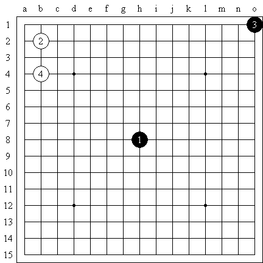

白２是否能离开中心一点呢？
#1 白２是否能离开中心一点呢？ 作者：江南新绿 发表时间：2008-9-14 19:04:31
目前妖刀已经把黑３扩大化了。目前根据明教花影的结论，有９个局面暂时没有确定的结论。那么白２是否能离开中心一点呢？这样能够带来多少未知的局面呢？很显然，在黑棋五手两打和三手交换的情况下，黑三不能太靠近中心，否则黑５必胜，也不能太远离，否则白４必胜。
那会有多少局面呢？
我们看到扩大化的妖刀规则，保留了黑１中心，三手交换，５手两打。废弃了白２的限制和黑３的限制。
#2 Re:白２是否能离开中心一点呢？ 作者：江南新绿 发表时间：2008-9-15 16:51:52

白２只要不选择边界，那么应该可以平衡的。论证如下：如图，黑３下的超弱，那么黑５就无法必胜。反之，如果黑３下的超强，那么黑５就可以必胜。那么我们猜测，在黑３最强和最弱之间，可以有平衡存在。
昨天有志问我是轮先下还是一方连走三手？
我觉得如果按图的话，显然又变成了ｓａｋａｔａ的翻版。只是ｓａｋａｔａ是４手和５手，这里是２手和３手。显然我们可以控制白２的边界，使得变化不至于太多。
#3 Re:白２是否能离开中心一点呢？ 作者：越狱行辕 发表时间：2008-9-15 17:15:07
 太复杂了
太复杂了
#4 Re:白２是否能离开中心一点呢？ 作者：许相公 发表时间：2008-10-8 10:18:56
只要双方的位置被确定下来，总会存在对应的关系，比如浦月开局不是由黑棋走出就是由白棋走出，妖刀也一样。有的妖刀可能是中心式的，有些可能是边缘的